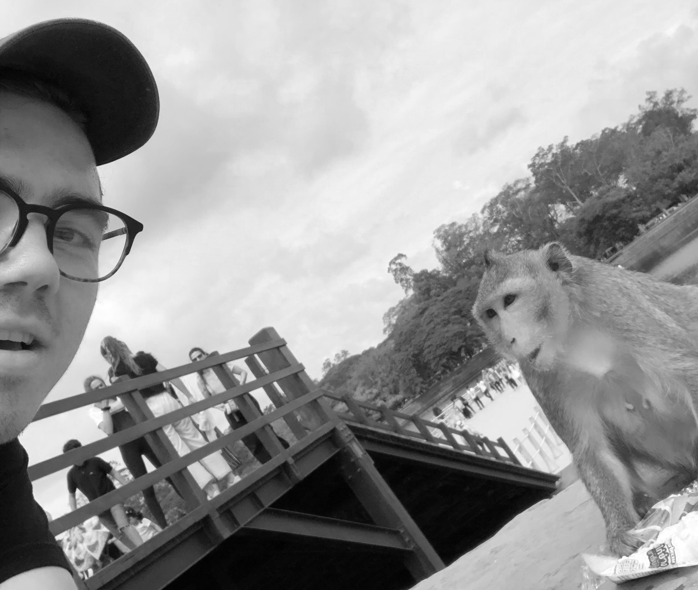

Age: 20
School: University of Pittsburgh
Current Year: Junior
Major: Computer Science
Minor: Political Theory
Started: August 2017
Expected Finish: May 2021
Quick Facts
Went to Super-Bowl 46
Favorite band is the Strokes
Super Smash Bros Ultimate main is Samus
Plays piano
Web-Developer @ You-Shall Thrive
-=-=-=-=-=-=-=-=-=-=-=-=-=-=-=-
Timeframe: March 2017 - July 2019
Location: Ridgewood NJ
Description: Developed and managed a range of projects using various software. Learned to collaborate with front and back end teams to create an effective product.
Waitstaff (Part-Time) @ The Park Steakhouse
-=-=-=-=-=-=-=-=-=-=-=-=-=-=-=-
Timeframe: January 2015 - July 2019
Location: Park Ridge NJ
Description: Worked to manage customers in a fast-paced environment. Answered all customer related inquires. Learned to collaborate to complete tasks in a timely and efficient manner.
Clubs
Game Design Club @ University of Pittsburgh
-=-=-=-=-=-=-=-=-=-=-=-=-=-=-=-
Timeframe: Octobor 2019 - Present
Location: Pittsburgh
Role: President/Founder
Volunteer
IT Consultant @ TCO Cambodia
-=-=-=-=-=-=-=-=-=-=-=-=-=-=-=-
Timeframe: August 3rd 2019 - August 25th 2019
Location: Siem Reap, Cambodia
Description: Worked to improve the volunteer organization's online presence. Cleaned up broken code on site. Wrote IT policy and improved social media policy.
